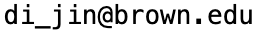

Biography

Art by CarBot
My name is Di Jin (金迪). I am a researcher at Huawei. I was a postdoc researcher at Atlas Group, Brown University, mentored by Nikos Vasilakis. My research interests include system security, software hardening, and other security and system related topics. I received my PhD from Brown University, advised by Vasileios P. Kemerlis. I did my undergrad in IIIS (Yao Class), Tsinghua University.
Email: 